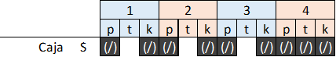
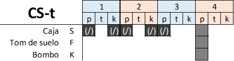
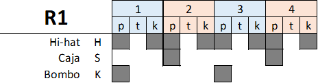
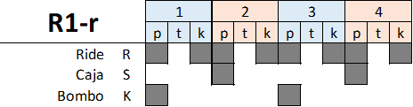
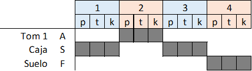

Intro: (CS: 2)
Estrofa 1: (CS: 8+7)(T(4): 1)
Estribillo: (R1-r: 7)(Br1: 1)
Estrofa 1: (R1: 8+7)(T(4): 1)
Estribillo: (R1-r: 8+3)(Br1: 1)
Estrofa 1: (R1: 4+1)(T(1): 1)(R1: 2)
Estribillo: (R1-r: 8+8)(T(4): 1)
(R1-r: 7)(Br1: 1)
Solo:





(CS: 2) Intro (CS: 8+7) A dónde lo huido el estremecimiento último apenas vislumbrado que nos atraviesa desde la infancia (CS-t: 1) tan delgada desesperanza. (: ) Y así se va diluyendo cada mañana y otra mañana. La misma de cada invierno, mansa esperanza. (: ) Prefiero la fiebre azul de noviembre, el silencio de la desolación, la voz aflautada y suspendida como bruma sobre sobre el viejo andén. (: ) Dividiendo el tiempo y paisaje, agrio, solemne y encogido. Todo por venir, todo por brotar, todo por desaparecer. Necesito un poema que limpie mi alma y una justificación para esta mañana. (: ) Un beso limpio para no desencuadernarme. Alguien capaz de desvelarse que pueda ver si aún respiro. Necesito que me sepulte la nieve con la lentitud de esa infancia nunca recuperada, de esa vida malgastada. (: ) Solo